プログラミング体験
ルール
マス目に4種類のイラストが配置されます。
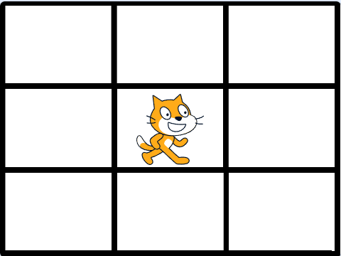
ネコ
ネコはブロックを使って動かすことができます。
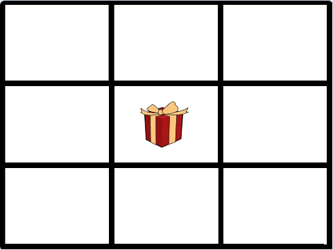
プレゼントボックス
プレゼントボックスはネコの目的地です。ネコをプレゼントボックスまで移動させましょう。
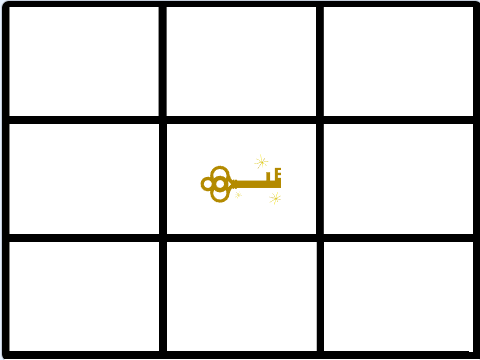
カギ
カギはプレゼントボックスを開けるために必要です。カギがある場合はカギのところまでネコを移動させてからプレゼントボックスまで移動させましょう。
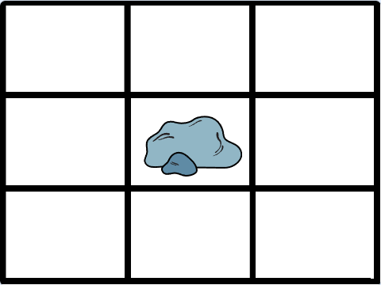
岩
岩があるマス目はネコが通れません。岩を避けてネコをプレゼントボックスまで移動させましょう。
使うことのできるブロックは以下の4種類です。
- 右に進む（みぎにすすむ）
- 左に進む（ひだりにすすむ）
- 上に進む（うえにすすむ）
- 下に進む（したにすすむ）
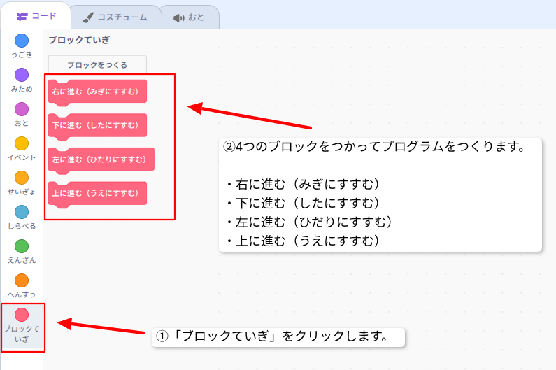
4種類のブロックは必ず「スタートをうけとったとき」ブロックの下につなげます。
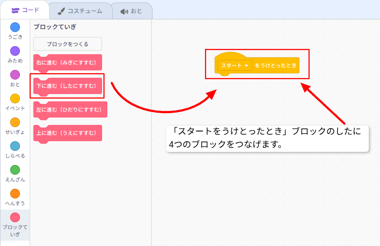
各問題には使用するブロックの数が決まっています。
指定された数より多くなったり少なくなったりしないように気おつけましょう。
「右に進む（みぎにすすむ）」ブロック
「右に進む（みぎにすすむ）」ブロックはネコを右に移動させるブロックです。
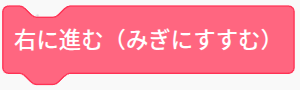
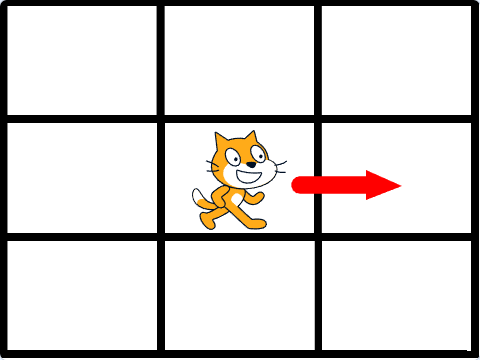
「左に進む（ひだりにすすむ）」ブロック
「左に進む（ひだりにすすむ）」ブロックはネコを左に移動させるブロックです。
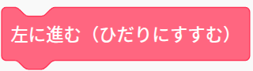
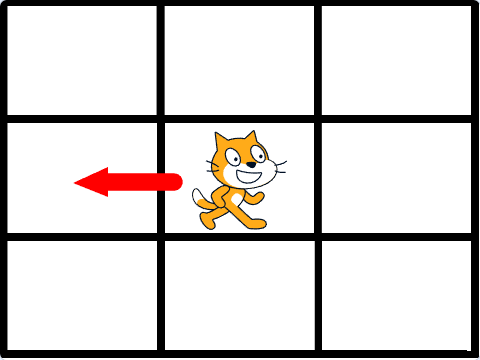
「上に進む（うえにすすむ）」ブロック
「上に進む（うえにすすむ）」ブロックはネコを上に移動させるブロックです。
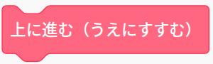
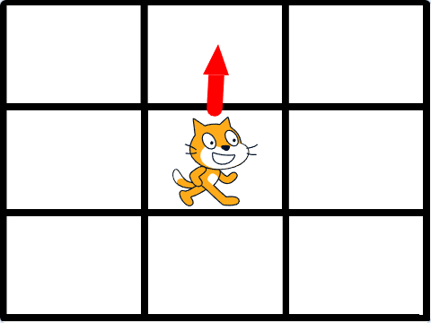
「下に進む（したにすすむ）」ブロック
「下に進む（したにすすむ）」ブロックはネコを下に移動させるブロックです。
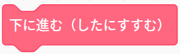
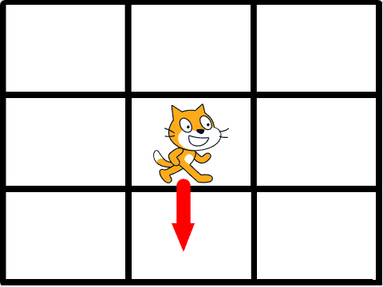
Level1
最大3つのブロックを使ってプレゼントボックスまでネコを移動させてください。
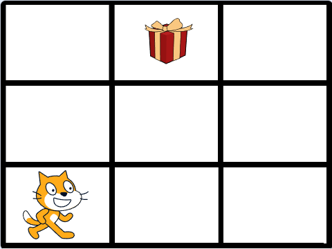
以下のURLからファイルをダウンロードしてScratchのプロジェクトにインポートしてください。
簡単プログラミング-level-1.sb3ダウンロードしたファイルScratchで開く方法（ここを押すと方法が確認できます）
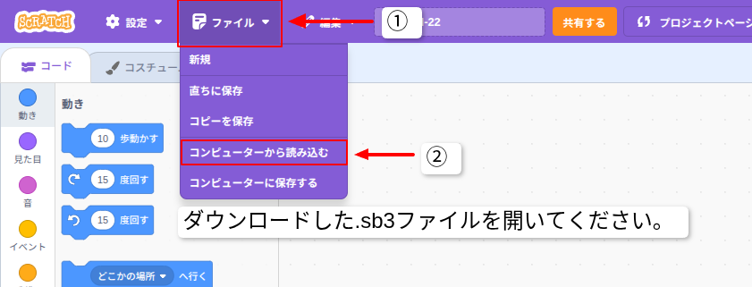
解答（ここを押すと解答が確認できます）
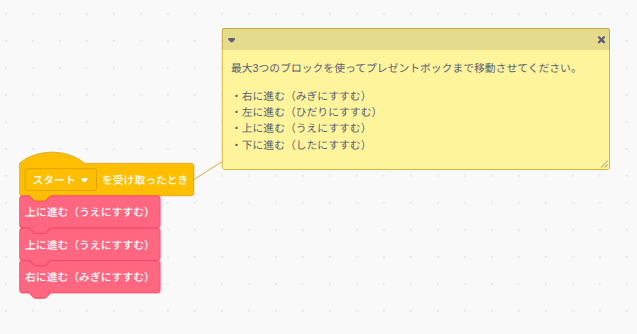
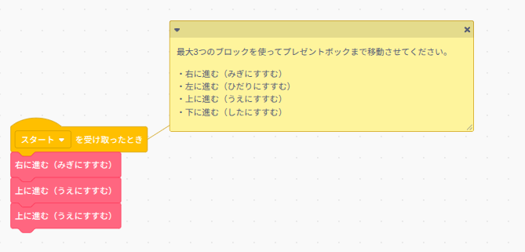
Level2
最大4つのブロックを使ってカギを取ってからプレゼントボックスまでネコを移動させてください。
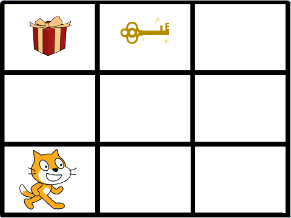
以下のURLからファイルをダウンロードしてScratchのプロジェクトにインポートしてください。
簡単プログラミング-level-2.sb3ダウンロードしたファイルScratchで開く方法（ここを押すと方法が確認できます）
解答（ここを押すと解答が確認できます）
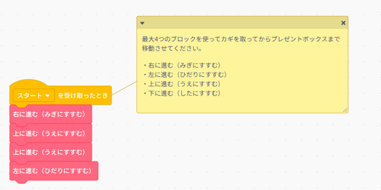
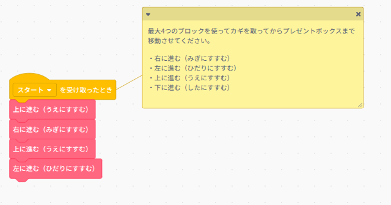
Level3
最大4つのブロックを使って岩を避けてプレゼントボックスまでネコを移動させてください。
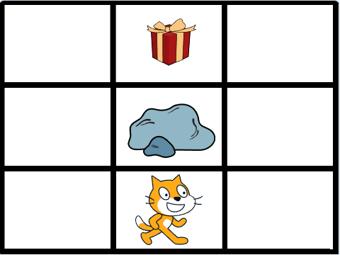
以下のURLからファイルをダウンロードしてScratchのプロジェクトにインポートしてください。
簡単プログラミング-level-3.sb3ダウンロードしたファイルScratchで開く方法（ここを押すと方法が確認できます）
解答（ここを押すと解答が確認できます）
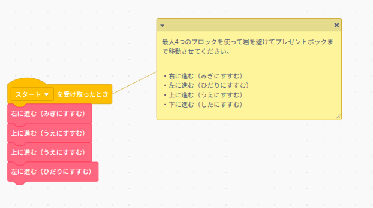
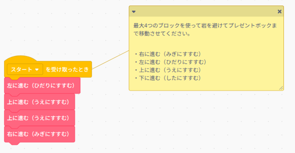
Level4
最大5つのブロックを使って岩を避けてカギを取ってからプレゼントボックスまでネコを移動させてください。
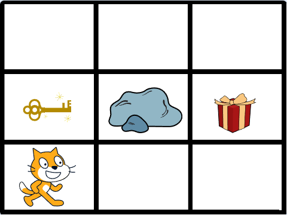
以下のURLからファイルをダウンロードしてScratchのプロジェクトにインポートしてください。
簡単プログラミング-level-4.sb3ダウンロードしたファイルScratchで開く方法（ここを押すと方法が確認できます）
解答（ここを押すと解答が確認できます）
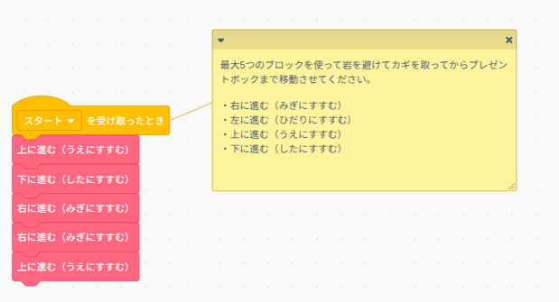
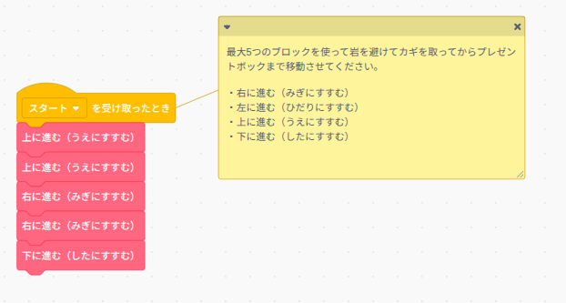
Level5
最大6つのブロックを使って岩を避けてカギを取ってからプレゼントボックスまでネコを移動させてください。
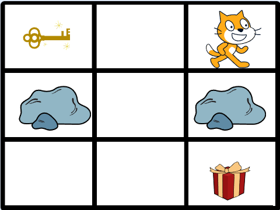
以下のURLからファイルをダウンロードしてScratchのプロジェクトにインポートしてください。
簡単プログラミング-level-5.sb3ダウンロードしたファイルScratchで開く方法（ここを押すと方法が確認できます）
解答（ここを押すと解答が確認できます）
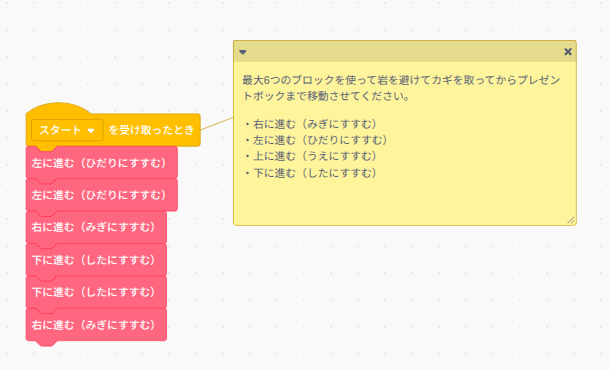